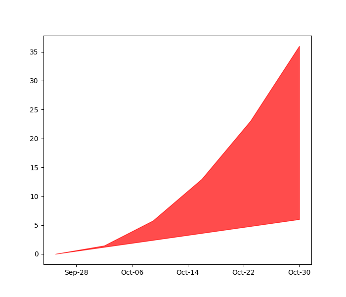
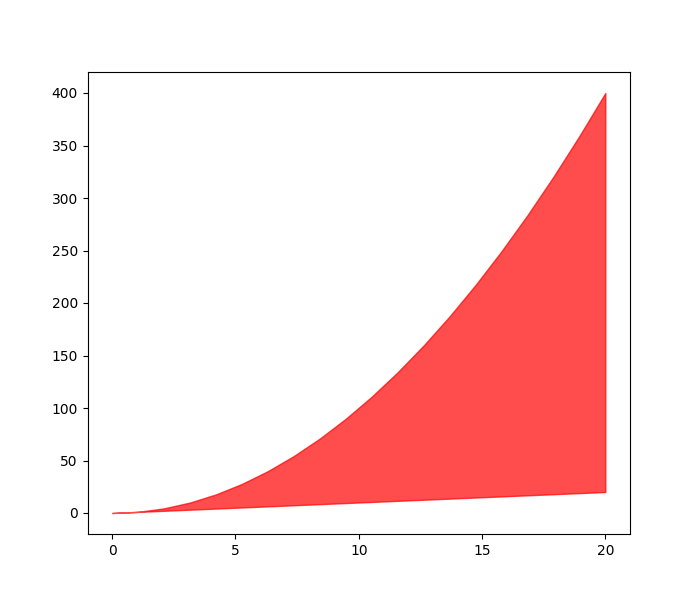
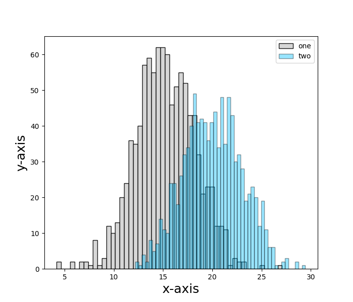
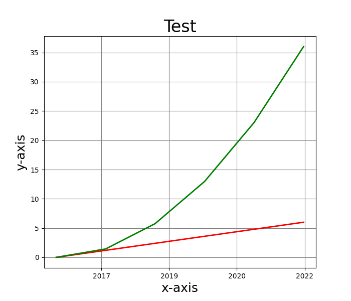
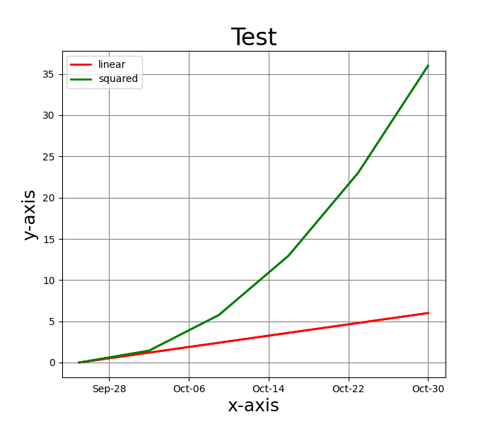

Plotting¶
This module contains classes that can be used to simplify the process of plotting data contained in a pandas dataframe for static and web based plots.
MatPlotDataFrame¶
This class contains methods that can be used to plot data in a pandas dataframe. This class was written to accomodate data that is organized in different ways within the dataframe.
-
class
plotting.MatPlotDataFrame(nrows: int = 1, ncols: int = 1, sharex: bool = False, sharey: bool = False, squeeze: bool = True, subplot_kw=None, gridspec_kw=None, height: int = 6, width: int = 7)[source]¶ - Parameters
nrows – Number of rows of the subplot grid, defaulted to 1
ncols – Number of columns of the subplot grid, defaulted to 1
sharex/sharey – Controls sharing of properties among x (sharex) or y (sharey) axes. * True or ‘all’, x or y axis will be shared among all subplots * False or ‘none’, each subplot x or y-axis will be independent * ‘row’ each subplot row will share an x or y axis * ‘col’ each subplot column will share an x or y axis
squeeze – If true, extra dimensions are squeezed out from the returned array of Axes.
subplot_kw – Dictionary with keywords bassed to the add_subplot call
gridspec_kw – Dict with keywords passed to the GridSpec constructor
This class allows a user to plot data from within one or multiple data frame in different ways. In addition, this class allows a user to mix different plotting methods into one plot
-
fill_between_dt_column(df: pandas.core.frame.DataFrame, x_headers: str, y_headers: str, style_name: str = 'default', fill_color: str = 'red', fill_alpha: numpy.float32 = 0.7, label_font_size: numpy.float32 = 18, x_label: str = '', y_label: str = '', title: str = '', x_scale: str = 'LIN', y_scale: str = 'LIN', tick_font_size: int = 18, title_font_size: int = 24, grid: bool = False, grid_style='-', grid_color='grey', row: int = 0, col: int = 0) → None[source]¶ - Parameters
pd – A pandas dataframe contining data to be plotted
x_headers – A list containing a single header that defines the time axis for plotting
y_headers – A list containing two headers, each header describing the column to be used for one of the two y-axis plots
style_name – The plot style, defaulted to ‘default’
fill_color – The color of the fill between lines. Defaulted to ‘red’
fill_alpha – The weight of the fill between lines. Defaulted to 0.7
label_fint_size – Defaulted to 18
x_label – The label for the x-axis, defaulted to ‘’
y_label – The label for the y-axis, defaulted to ‘’
title – The plot title. Defaulted to ‘’
x_scale – ‘LOG’ or ‘LIN’, defaulted to ‘LIN’
y_scale – ‘LOG’ or ‘LIN’, defaulted to ‘LIN’
tick_font_size – Defaulted to 18
title_font_size – Defaulted to 24
grid – True if a grid is desired, False otherwise. Defaulted to False
grid_style – Defaulted to ‘-‘
grid_color – Defaulted to ‘grey’
row – The row position in the plot grid where the plot is to be placed. Defaulted to 0
col – The column in the plot grid where the plot is to be placed. Defaulted to 0
This plot method will fill the space between two date time lines with a solid color. An example is shown below.
> length = 6 > dates = pd.date_range(start=pd.to_datetime('2016-09-24'), periods = length, freq='y') > x = np.linspace(0, length, num=length) > linear = x > squared = x ** 2.0 > dictionary = {'dates': dates, 'squared': squared, 'linear': linear} > df = pd.DataFrame(dictionary) > # Plot data > obj = MatPlotDataFrame() > time_axis = ['dates', 'dates'] > y_axis = ['linear', 'squared'] > obj.fill_between_dt_column(df, time_axis, y_axis) > obj.show_plot()
-
fill_between_dt_parse_column(df: pandas.core.frame.DataFrame, x_header: str, y_header: str, parsing_header: str, column_values: List[str], style_name: str = 'default', fill_color: str = 'red', fill_alpha: numpy.float32 = 0.7, label_font_size: numpy.float32 = 18, x_label: str = '', y_label: str = '', title: str = '', x_scale: str = 'LIN', y_scale: str = 'LIN', tick_font_size: int = 18, title_font_size: int = 24, grid: bool = False, grid_style='-', grid_color='grey', row: int = 0, col: int = 0) → None[source]¶ - Parameters
df – A pandas dataframe containing data to be plotted
x_header – A list containing the title of the column containing timedate data. The list should only contain one header
y_header – A list containing the title of the column containing y-axis data. This list should only contain two headers
parsing_header – The title of the column containing data that will be used to parse the data frame
column_values – A list containing the keywords within the column defined by parsing_header that will be used to parse the dataframe
style_name – The style name to be used for the plot. Defaulted to default
fill_color – The color to be used in the fill between lines. Defaulted to red
fill_alpha – The weight of the fill between lines. Defaulted to 0.7
label_font_size – The font size of the x and y-axis labels. Defaulted to 18
x_label – The x axis label, defaulted to ‘’
y_label – The y axis label, defaulted to ‘’
title – The plot title, defaulted to ‘’
tick_font_size – Defaulted to 18.
title_font_size – Defaulted to 24
grid – True if a grid is desired, False is not. Defaulted to False
grid_style – Defaulted to ‘-‘
grid_color – Defaulted to ‘grey’
row – The row in which the plot is to be placed. Defaulted to 0
col – The column in which the plot is to be placed. Defaulted to 0
This plot method will fill the space between two date time lines with a solid color. An example is shown below.
> length = 20 > x = np.linspace(0, length, num=length) > linear = x > squared = x ** 2.0 > lin = np.repeat('linear', length) > sq = np.repeat('squared', length) > # Combine arrays into one > x = np.hstack((x, x)) > y = np.hstack((linear, squared)) > power = np.hstack((lin, sq)) > # Create dataframe > dictionary = {'x': x, 'y': y, 'power': power} > df = pd.DataFrame(dictionary) > # Plot data > obj = MatPlotDataFrame(1, 1) > parsing_header = 'power' > column_values = ['linear', 'squared'] > obj.fill_between_dt_parse_column(df, 'dates', 'y', parsing_header, column_values) > obj.show_plot()
-
fill_between_lines_columns(df: pandas.core.frame.DataFrame, x_headers: str, y_headers: str, style_name: str = 'default', fill_color: str = 'red', fill_alpha: numpy.float32 = 0.7, label_font_size: numpy.float32 = 18, x_label: str = '', y_label: str = '', title: str = '', x_scale: str = 'LIN', y_scale: str = 'LIN', tick_font_size: int = 18, title_font_size: int = 24, grid: bool = False, grid_style='-', grid_color='grey', row: int = 0, col: int = 0)[source]¶ - Parameters
df – A pandas dataframe containing information to be plotted
x_headers – A list of the name for columns containing x data. This list should only conain one name
y_headers – A list of the names for columns containing y_data. This should only contain two names
style_name – The plot style, set to default
fill_color – The color for the fill between two lines. Defaulted to red
fill_alpha – The weight for the fill between two lines
label_font_size – The font size for the x and y axis labels
x_label – The x-axis label
y_label – The y-axis label
title – The plot title
x_scale – ‘LIN’ or ‘LOG’, defaulted to ‘LIN’
y_scale – ‘LIN’ or ‘LOG’, defaulted to ‘LOG’
tick_font_size – Defaulted to 18
title_font_size – Defaulted to 24
grid – True or False
grid_style – Defaulted to ‘-‘
grid_color – Defaulted to ‘grey’
row – The row in the grid where the plot will be placed
col – The column in the grid where the plot will be placed
This plot method will fill the space between two lines with a solid color. An example is shown below.
> length = 20 > x = np.linspace(0, 20, num=20) > linear = x > squared = x ** 2.0 > # create dataframe > dictionary = {'x': x, 'linear': linear, 'squared': squared} > df = pd.DataFrame(dictionary) > # plot data > obj = MatPlotDataFrame(1, 1) > x_headers = ['x', 'x'] > y_headers = ['linear', 'squared'] > obj = MatPlotDataFrame(nrows=1, ncols=1) > obj.fill_between_lines_columns(df, x_headers, y_headers) > obj.show_plot()
-
fill_between_lines_parse_column(df: pandas.core.frame.DataFrame, x_header: str, y_header: str, parsing_header: str, column_values: List[str], style_name: str = 'default', fill_color: str = 'red', fill_alpha: numpy.float32 = 0.7, label_font_size: numpy.float32 = 18, x_label: str = '', y_label: str = '', title: str = '', x_scale: str = 'LIN', y_scale: str = 'LIN', tick_font_size: int = 18, title_font_size: int = 24, grid: bool = False, grid_style='-', grid_color='grey', row: int = 0, col: int = 0) → None[source]¶ - Parameters
df – A pandas dataframe containing data to be plotted
x_header – The column header containing data to be plotted in the x-axis
y_header – The column header containing data to be plotted in the y-axis
parsing_header – The column containing key words that are used to determine what data is plotted. The keywords will also be used as the plot labels is
labelsis set to truecolumn_values – The keywords that exist within the column defined by parsing header. The function will filter the dataframe to only contain rows where this keyword is present
style_name – The plot style, defaulted to ‘default’. See :href styles<https://matplotlib.org/stable/api/style_api.html>
fill_color – The color of the fill between the lines
fill_alpha – The fill weight
label_font_size – The size of the x and y axis labels. Defaulted to 18
x_label – The x-axis label, defaulted to ‘’
y_label – The y-axis label, defaulted to ‘’
title – The plot title, defaulted to ‘’
x_scale – ‘LOG’ or ‘LIN’, defaulted to ‘LIN’
y_scale – ‘LOG’ or ‘LIN’, defaulted to ‘LIN’
tick_font_size – The tick font size, defaulted to 18
grid – True if a grid is desired. Defaulted to False
row – The row within the plot grid where this plot will be placed. Defaulted to 1
col – The column within the plot grid where this plot will be placed. Defaulted to 1
labels – True is a legend is to be printed, False if not. Defaulted to True
This plot method will fill the space between two lines with a solid color. An example is shown below.
> length = 20 > x = np.linspace(0, length, num=length) > linear = x > squared = x ** 2.0 > lin = np.repeat('linear', length) > sq = np.repeat('squared', length) > # Combine arrays into one > x = np.hstack((x, x)) > y = np.hstack((linear, squared)) > power = np.hstack((lin, sq)) > # Create dataframe > dictionary = {'x': x, 'y': y, 'power': power} > df = pd.DataFrame(dictionary) > # Plot data > obj = MatPlotDataFrame(1, 1) > parsing_header = 'power' > column_values = ['linear', 'squared'] > obj.fill_between_lines_parse_column(df, 'x', 'y', parsing_header, column_values) > obj.show_plot()
-
histogram_plot_parse_column(df: pandas.core.frame.DataFrame, header: str, parsing_header: str, column_values: List[str], x_label: str = '', y_label: str = '', colors: List[str] = ['None'], edge_colors: List[str] = ['None'], shading: List[float] = ['None'], label_pos: str = 'upper right', num_bins: int = 50, tick_font_size: int = 18, label_font_size: str = 18, style_name: str = 'default', hist_type: str = 'bar', dens: bool = False, title: str = 'NULL', title_font_size: int = 24, row: int = 0, col: int = 0, labels: bool = True) → None[source]¶ - Parameters
df – A pandas dataframe containing data to be plotted
header – The name of the column header containing the data to be plotted
parsing_header – The name of the column header containing key words that will be used to parse the dataframe
column_values – A list containing the keywords within the column described by
parsing_header.x_label – The x-axis label, defaulted to ‘’
y_label – The y-axis label, defaulted to ‘’
colors – A list containing the colors for each hsitogram
shading – A list describing The opacity of each histogram color, defaulted to [“None’]
label_pos – The position of the legend, defaulted to ‘upper right’
num_bins – The number of bins used for the histogram. Defaulted to 50
tick_font_size – Defaulted to 18
label_font_size – Defaulted to 18
style_name – The plot style, defaulted to ‘default’
hist_type – The type of histogram, defaulted to ‘bar’; however, the options are ‘bar’, ‘barstacked’, ‘step’, and ‘stepfilled’
dens – If True, the first element of the return tuple will be the counts normalized to form a probability density, i.e., the area (or integral) under the histogram will sum to 1
title – The title of the plot to incorporate into the header. Defaulted to NULL
title_font_size – The font size for the tile, defaulted to 24
This plot method will allow a user to plot one or multiple histograms on a single plot. This function will also allow a user to create a histogram plot as one of several plots in a grid array of plots.
> np.random.seed(19680801) > x = np.random.normal(15.0, 3.0, 1000) > y = np.random.normal(20.0, 3.0, 1000) > data = [x, y] > labels = ['one', 'two'] > one = np.repeat('one', len(x)) > two = np.repeat('two', len(x)) > x = np.hstack((x, y)) > y = np.hstack((one, two)) > dictionary = {'data': x, 'type': y} > df = pd.DataFrame(dictionary) > obj = MatPlotDataFrame() > obj.histogram_plot_parse_column(df, 'data', 'type', labels, x_label='x-axis', y_label='y-axis', shading=[0.9, 0.4]) > obj.show_plot()
-
line_plot_columns(df: pandas.core.frame.DataFrame, x_headers: str, y_headers: str, labels: bool = True, style_name: str = 'default', line_colors: List[str] = ['None'], line_weight: numpy.float32 = 2.0, line_style: str = '-', x_label: str = '', y_label: str = '', title: str = '', label_pos: str = 'upper right', x_scale: str = 'LIN', y_scale: str = 'LIN', label_font_size: int = 18, tick_font_size: int = 18, title_font_size: int = 24, grid: bool = False, grid_style='-', grid_color='grey', row: int = 0, col: int = 0) → None[source]¶ - Parameters
df – A pandas dataframe containing the data to be plotted
x_headers – The title of the dataframe columns containing the x-axis data sets
y_headers – The title of the dataframe columns containing the y-axis data sets
labels – A list containing the name of each label
style_name – The name of the matplotlib style that will be used to format the plot. Defaulted to ‘default’. Possible styles can be found at :href styles<https://matplotlib.org/stable/api/style_api.html>
line_colors – A list of line colors, where each marker color corresponds to each data set. This parameter has a default color lists that can accomodate 18 different data sets. The user can override the default colors with a list of their own. Potential colors can be found at :href colors<https://matplotlib.org/stable/gallery/color/named_colors.html>
line_weight – The weight corresponding to the line thickness, defaulted to 2.0
x_label – The x axis label,defaulted to ‘ ‘
y_label – The y axis label, defaulted to ‘ ‘
title – The plot title, defaulted to ‘ ‘
label_pos – The position of the legend in the plot. Defaulted to ‘upper right’
x_scale – ‘LOG’ or ‘LIN’, defaulted to ‘LIN’
y_scale – ‘LOG’ or ‘LIN’, defaulted to ‘LIN’
label_font_size – The label font size, defaulted to 18
tick_font_size – The tick font size, defaulted to 18
title_font_size – The title font size, defaulted to 24
grid – True if a grid overlaid on the plot is desired, False if not
grid_color – Defaulted to ‘grey’
grid_style – Defaulted to ‘-‘
row – The row within the grid that the plot fill fill
col – The column within the gird that the plot will fill
This plot method will read in user defined columns for the x and y axis to produce multiple or single line plots in a single plot or a grided array of plots
> length = 20 > x = np.linspace(0, 20, num=20) > linear = x > squared = x ** 2.0 > # create dataframe > dictionary = {'x': x, 'linear': linear, 'squared': squared} > df = pd.DataFrame(dictionary) > # plot data > obj = MatPlotDataFrame() > x_headers = ['x', 'x'] > y_headers = ['linear', 'squared'] > obj.line_plot_columns(df, x_headers, y_headers, labels=False, x_label='x-axis', y_label='y-axis', title='Test', style_name='default',line_colors=['red', 'green'], label_pos='upper left', grid=False) > obj.show_plot()

-
line_plot_parse_column(df: pandas.core.frame.DataFrame, x_header: str, y_header: str, parsing_header: str, column_values: List[str], style_name: str = 'default', line_colors: List[str] = ['None'], line_weight: numpy.float32 = 2.0, line_style: str = '-', x_label: str = '', y_label: str = '', title: str = '', label_pos: str = 'upper right', x_scale: str = 'LIN', y_scale: str = 'LIN', label_font_size: int = 18, tick_font_size: int = 18, title_font_size: int = 24, grid: bool = False, grid_style='-', grid_color='grey', row: int = 0, col: int = 0, labels: bool = True) → None[source]¶ - Parameters
df – A pandas dataframe containing data to be plotted
x_header – The column header containing data to be plotted in the x-axis
y_header – The column header containing data to be plotted in the y-axis
parsing_header – The column containing key words that are used to determine what data is plotted. The keywords will also be used as the plot labels is
labelsis set to truecolumn_values – The keywords that exist within the column defined by parsing header. The function will filter the dataframe to only contain rows where this keyword is present
style_name – The plot style, defaulted to ‘default’. See :href styles<https://matplotlib.org/stable/api/style_api.html>
line_colors – A list of line colors, where each marker color corresponds to each data set. This parameter has a default color lists that can accomodate 18 different data sets. The user can override the default colors with a list of their own. Potential colors can be found at :href colors<https://matplotlib.org/stable/gallery/color/named_colors.html>
line_weight – The weight of the line, defaulted to 2.0
line_style – THe line style defaulted to ‘-‘
x_label – The x-axis label, defaulted to ‘’
y_label – The y-axis label, defaulted to ‘’
title – The plot title, defaulted to ‘’
x_scale – ‘LOG’ or ‘LIN’, defaulted to ‘LIN’
y_scale – ‘LOG’ or ‘LIN’, defaulted to ‘LIN’
label_pos – The position of the legend in the plot. Defaulted to upper right
label_font_size – The label font size, defaulted to 18
tick_font_size – The tick font size, defaulted to 18
marker_size – The size of the markers, defaulted to 35
marker_edge_width – The width of the line surrounding each marker. Defaulted to 0.8
grid – True if a grid is desired. Defaulted to False
row – The row within the plot grid where this plot will be placed. Defaulted to 1
col – The column within the plot grid where this plot will be placed. Defaulted to 1
labels – True is a legend is to be printed, False if not. Defaulted to True
This plot method will read in user defined columns for data to be plotted in the x and y axis. The function will parse a specific column based on user input so only specific data is plotted. The data will be plotted as single or multiple line plots in a single figure or as multiple plots in a grided pattern
> length = 20 > x = np.linspace(0, length, num=length) > linear = x > squared = x ** 2.0 > lin = np.repeat('linear', length) > sq = np.repeat('squared', length) > # Combine arrays into one > x = np.hstack((x, x)) > y = np.hstack((linear, squared)) > power = np.hstack((lin, sq)) > # Create dataframe > dictionary = {'x': x, 'y': y, 'power': power} > df = pd.DataFrame(dictionary) > # Plot data > obj = MatPlotDataFrame(1, 1) > parsing_header = 'power' > column_values = ['linear', 'squared'] > obj.line_plot_parse_column(df, 'x', 'y', parsing_header, column_values, line_colors=['red', 'green'], label_pos='upper left') > obj.show_plot()
-
save_fig(file_name: str) → None[source]¶ - Parameters
file_name – The name of the file to be saved to include the path length
This function will save a plot to a file and directory of the users choosing
-
scatter_plot_columns(df: pandas.core.frame.DataFrame, x_headers: List[str], y_headers: List[str], labels: bool = True, style_name: str = 'default', marker_colors: List[str] = ['None'], marker_style: List[str] = ['None'], fill_alpha: numpy.float32 = 0.7, edge_color: str = 'black', x_label: str = '', y_label: str = '', title: str = '', label_pos: str = 'upper right', x_scale: str = 'LIN', y_scale: str = 'LIN', label_font_size: int = 18, tick_font_size: int = 18, title_font_size=32, marker_size: int = 35, marker_edge_width: numpy.float32 = 0.8, grid: bool = False, grid_style: str = '-', grid_color='grey', row: int = 0, col: int = 0) → None[source]¶ - Parameters
df – A pandas dataframe containing the data to be plotted
x_headers – The title of the dataframe columns containing the x-axis data sets.
y_headers – The title of the dataframe columns containing the y-axis data sets. The y_headers values will also be used as the labels for each individual plot if
labelsis set to Truelabels – True if a legend is to be plotted, False if not. Defaulted to True
style_name – The name of the matplotlib style that will be used to format the plot. Defaulted to ‘default’. Possible styles can be found at :href styles<https://matplotlib.org/stable/api/style_api.html>
marker_colors – A list of marker colors, where each marker color corresponds to each data set. This parameter has a default color lists that can accomodate 18 different data sets. The user can override the default colors with a list of their own. Potential colors can be found at :href colors<https://matplotlib.org/stable/gallery/color/named_colors.html>
marker_style – A list of marker styles, where each marker style corresponds to a data set. This parameter has a default list of 18 circle marker styles that the user can override. Marker styles can be found at :href marker style<https://matplotlib.org/stable/api/markers_api.html>
fill_apha – The density of the marker fill. Defaulted to 0.7
edge_color – The color of the line surrounding the marker
x_label – The x axis label,defaulted to ‘ ‘
y_label – The y axis label, defaulted to ‘ ‘
title – The plot title, defaulted to ‘ ‘
label_pos – The position of the legend in the plot. Defaulted to ‘upper right’
x_scale – ‘LOG’ or ‘LIN’, defaulted to ‘LIN’
y_scale – ‘LOG’ or ‘LIN’, defaulted to ‘LIN’
label_font_size – The label font size, defaulted to 18
tick_font_size – The tick font size, defaulted to 18
title_font_size – The title font size, defaulted to 24
marker_size – The size of the marker, defaulted to 35
marker_edge_width – The thickness of the line outlining each marker. Defaulted to 0.8
grid – True if a grid overlaid on the plot is desired, False if not
grid_color – Defaulted to ‘grey’
grid_style – Defaulted to ‘-‘
row – The row in the plot grid that the plot will be placed. Defaulted to 0
col – The column in the plot grid where the plot will be placed. Defaulted to 0
This plot method will read in user defined columns for the x and y axis to produce multiple or single scatter plots in a single plot or a grided array of plots
> length = 20 > x = np.linspace(0, 20, num=20) > linear = x > squared = x ** 2.0 > # create dataframe > dictionary = {'x': x, 'linear': linear, 'squared': squared} > df = pd.DataFrame(dictionary) > # plot data > obj = MatPlotDataFrame() > x_headers = ['x', 'x'] > y_headers = ['linear', 'squared'] > obj.scatter_plot_columns(df, x_headers, y_headers, y_headers, x_label='x-axis', y_label='y-axis', title='Test', style_name='default',marker_colors=['red', 'green'], fill_alpha=0.7, marker_style=['o', '^'], label_pos='upper left', grid=False, save=True, plot_name=plt_name) > obj.show_plot()

-
scatter_plot_parse_column(df: pandas.core.frame.DataFrame, x_header: str, y_header: str, parsing_header: str, column_values: List[str], style_name: str = 'default', marker_colors: List[str] = ['None'], marker_style: List[str] = ['None'], fill_alpha: numpy.float32 = 0.7, edge_color: str = 'black', x_label: str = '', y_label: str = '', title: str = '', label_pos: str = 'upper right', x_scale: str = 'LIN', y_scale: str = 'LIN', label_font_size: int = 18, tick_font_size: int = 18, title_font_size: int = 24, marker_size: int = 35, marker_edge_width: numpy.float32 = 0.8, grid: bool = False, grid_style: str = '-', grid_color='grey', row: int = 0, col: int = 0, labels: bool = True) → None[source]¶ - Parameters
df – A pandas dataframe containing data to be plotted
x_header – The column header containing data to be plotted in the x-axis
y_header – The column header containing data to be plotted in the y-axis
parsing_header – The column containing key words that are used to determine what data is plotted. The keywords will also be used as the plot labels is
labelsis set to truecolumn_values – The keywords that exist within the column defined by parsing header. The function will filter the dataframe to only contain rows where this keyword is present
style_name – The plot style, defaulted to ‘default’. See :href styles<https://matplotlib.org/stable/api/style_api.html>
marker_colors – A list of marker colors, where each marker color corresponds to each data set. This parameter has a default color lists that can accomodate 18 different data sets. The user can override the default colors with a list of their own. Potential colors can be found at :href colors<https://matplotlib.org/stable/gallery/color/named_colors.html>
marker_style – A list of marker styles, where each marker style corresponds to a data set. This parameter has a default list of 18 circle marker styles that the user can override. Marker styles can be found at :href marker style<https://matplotlib.org/stable/api/markers_api.html>
fill_alpha – The density of the marker fill. Defaulted to 0.7
edge_color – The color of the line surrounding the marker
x_label – The x-axis label, defaulted to ‘’
y_label – The y-axis label, defaulted to ‘’
title – The plot title, defaulted to ‘’
label_pos – The position of the legend in the plot. Defaulted to upper right
x_scale – ‘LOG’ or ‘LIN’, defaulted to ‘LIN’
y_scale – ‘LOG’ or ‘LIN’, defaulted to ‘LIN’
label_font_size – The label font size, defaulted to 18
tick_font_size – The tick font size, defaulted to 18
title_font_size – Defaulted to 24
marker_size – The size of the markers, defaulted to 35
marker_edge_width – The width of the line surrounding each marker. Defaulted to 0.8
grid – True if a grid is desired. Defaulted to False
grid_style – Defaulted to ‘-‘
grid_color – Defaulted to ‘grey’
row – The row within the plot grid where this plot will be placed. Defaulted to 0
col – The column within the plot grid where this plot will be placed. Defaulted to 0
labels – True if a legend is to be printed, False if not. Defaulted to True
This plot method will read in user defined columns for data to be plotted in the x and y axis. The function will parse a specific column based on user input so only specific data is plotted. The data will be plotted as single or multiple scatter plots in a single figure or as multiple plots in a grided pattern
> length = 20 > x = np.linspace(0, length, num=length) > linear = x > squared = x ** 2.0 > lin = np.repeat('linear', length) > sq = np.repeat('squared', length) > # Combine arrays into one > x = np.hstack((x, x)) > y = np.hstack((linear, squared)) > power = np.hstack((lin, sq)) > # Create dataframe > dictionary = {'x': x, 'y': y, 'power': power} > df = pd.DataFrame(dictionary) > # Plot data > obj = MatPlotDataFrame(1, 1) > parsing_header = 'power' > column_values = ['linear', 'squared'] obj.scatter_plot_parse_column(df, 'x', 'y', parsing_header, column_values, x_label='x-axis', y_label='y-axis', title='Test', style_name='default', marker_style=['o', '^'], label_pos='upper left', grid=True, labels=True) obj.show_plot()

-
timedate_plot_columns(df: pandas.core.frame.DataFrame, x_headers: str, y_headers: str, labels: bool = True, style_name: str = 'default', line_colors: List[str] = ['None'], line_weight: numpy.float32 = 2.0, line_style: str = '-', x_label: str = '', y_label: str = '', title: str = '', label_pos: str = 'upper right', x_scale: str = 'LIN', y_scale: str = 'LIN', label_font_size: int = 18, tick_font_size: int = 18, title_font_size: int = 24, grid: bool = False, grid_style='-', grid_color='grey', row: int = 0, col: int = 0) → None[source]¶ - Parameters
df – a pandas dataframe containing data to be plotted
x_headers – The title of the dataframe column containing the x-axis data sets. It is assumes that the x axis is the datetime axis for this plot.
y_headers – The title of the dataframe column containing the y-axis data sets
labels – A list of the labels to use for each curve in the legend
style_name – The name of the matplotlib style that will be used to format the plot. Defaulted to ‘default’. Possible styles can be found at :href styles<https://matplotlib.org/stable/api/style_api.html>
line_colors – A list of line colors, where each marker color corresponds to each data set. This parameter has a default color lists that can accomodate 18 different data sets. The user can override the default colors with a list of their own. Potential colors can be found at :href colors<https://matplotlib.org/stable/gallery/color/named_colors.html>
line_weight – The weight corresponding to the line thickness, defaulted to 2.0
fill_apha – The density of the marker fill. Defaulted to 0.7
x_label – The x axis label,defaulted to ‘ ‘
y_label – The y axis label, defaulted to ‘ ‘
title – The plot title, defaulted to ‘ ‘
label_pos – The position of the legend in the plot. Defaulted to ‘upper right’
x_scale – ‘LOG’ or ‘LIN’, defaulted to ‘LIN’
y_scale – ‘LOG’ or ‘LIN’, defaulted to ‘LIN’
label_font_size – The label font size, defaulted to 18
tick_font_size – The tick font size, defaulted to 18
title_font_size – The title font size, defaulted to 24
grid – True if a grid overlaid on the plot is desired, False if not
grid_color – Defaulted to ‘grey’
grid_style – Defaulted to ‘-‘
row – The row within the plot grid that the plot will be placed
col – The column within the plot grid that the plot will be placed
This method will parse a dataframe column based on a user specified value or list of values, and plot the data in a user specified x and y axis column based on filter data. As an example, consider a dataframe with the following columnar data structure.
> length = 6 > dates = pd.date_range(start=pd.to_datetime('2016-09-24'), periods = length, freq='y') > x = np.linspace(0, length, num=length) > linear = x > squared = x ** 2.0 > dictionary = {'dates': dates, 'squared': squared, 'linear': linear} > df = pd.DataFrame(dictionary) > # Plot data > obj = MatPlotDataFrame() > time_axis = ['dates', 'dates'] > y_axis = ['linear', 'squared'] > obj.timedate_plot_columns(df, time_axis, y_axis, y_axis, x_label='x-axis', y_label='y-axis', title='Test', style_name='default', line_colors=['red', 'green'], label_pos='upper left', grid=True) > obj.show_plot()
-
timedate_plot_parse_column(df: pandas.core.frame.DataFrame, x_header: str, y_header: str, parsing_header: str, column_values: List[str], style_name: str = 'default', line_colors: List[str] = ['None'], line_weight: numpy.float32 = 2.0, line_style: str = '-', x_label: str = '', y_label: str = '', title: str = '', label_pos: str = 'upper right', x_scale: str = 'LIN', y_scale: str = 'LIN', label_font_size: int = 18, tick_font_size: int = 18, title_font_size: int = 24, grid: bool = False, grid_style='-', grid_color='grey', row: int = 0, col: int = 0, labels: bool = True) → None[source]¶ - Parameters
df – A pandas dataframe containing the data to be plotted
x_header – The title of the dataframe column containing the x-axis data sets. It is assumes that the x axis is the datetime axis for this plot.
y_header – The title of the dataframe column containing the y-axis data sets
parsing_header – The title of the dataframe column containing the values which will be used to parse the dataframe into one or multiple data sets
column_values – The values contained in the parsing_header column that will be used to parse the data set into multiple data sets
style_name – The name of the matplotlib style that will be used to format the plot. Defaulted to ‘default’. Possible styles can be found at :href styles<https://matplotlib.org/stable/api/style_api.html>
line_colors – A list of line colors, where each marker color corresponds to each data set. This parameter has a default color lists that can accomodate 18 different data sets. The user can override the default colors with a list of their own. Potential colors can be found at :href colors<https://matplotlib.org/stable/gallery/color/named_colors.html>
line_weight – The weight corresponding to the line thickness, defaulted to 2.0
fill_apha – The density of the marker fill. Defaulted to 0.7
x_label – The x axis label,defaulted to ‘ ‘
y_label – The y axis label, defaulted to ‘ ‘
title – The plot title, defaulted to ‘ ‘
label_pos – The position of the legend in the plot. Defaulted to ‘upper right’
x_scale – ‘LOG’ or ‘LIN’, defaulted to ‘LIN’
y_scale – ‘LOG’ or ‘LIN’, defaulted to ‘LIN’
plot_name – The name of the file containing the plot if the plot is to be saved. Defaulted to ‘NULL’
save – True if the plot is to be saved, False if the plot is to be shown and not saved. Defaulted to False
label_font_size – The label font size, defaulted to 18
tick_font_size – The tick font size, defaulted to 18
title_font_size – The title font size, defaulted to 24
marker_size – The size of the marker, defaulted to 35
marker_edge_width – The thickness of the line outlining each marker. Defaulted to 0.8
grid – True if a grid overlaid on the plot is desired, False if not
grid_color – Defaulted to ‘grey’
- Grid_style
Defaulted to ‘-‘
This plot method will read in user defined columns for data to be plotted in the x and y axis. The function will parse a specific column based on user input so only specific data is plotted. The data will be plotted as single or multiple timedate plots in a single figure or as multiple plots in a grided pattern
> length = 6 > dates = pd.date_range(start=pd.to_datetime('2016-09-24'), periods = length, freq='w') > x = np.linspace(0, length, num=length) > linear = x > squared = x ** 2.0 > lin = np.repeat('linear', length) > sq = np.repeat('squared', length) > # Combine arrays into one > x = np.hstack((dates, dates)) > y = np.hstack((linear, squared)) > power = np.hstack((lin, sq)) > # Create dataframe > dictionary = {'dates': x, 'y': y, 'power': power} > df = pd.DataFrame(dictionary) > # Plot data > obj = MatPlotDataFrame() > parsing_header = 'power' > column_values = ['linear', 'squared'] > obj.timedate_plot_parse_column(df, 'dates', 'y', parsing_header, column_values, x_label='x-axis', y_label='y-axis', title='Test', style_name='default', line_colors=['red', 'green'], label_pos='upper left', grid=True) > obj.show_plot()